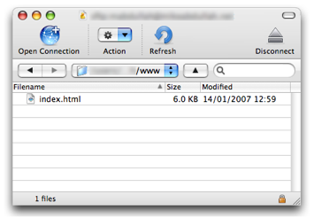

Manually Uploading a Site Using Cyberduck
To upload an exported Sandvox site using Cyberduck:
- Launch Cyberduck and click the "Open Connection" item in the toolbar.
- Select a protocol that your host supports. We prefer SFTP as it more secure, but if not FTP will work fine.
-
Enter your hostname into the "server" field. Also enter your username and password. If you do not know any of this information, contact your host for it.
- Click the "Connect" button.
-
Once Cyberduck has connected to your host, browse to and double-click your document root folder. If you do not know which folder this is, please check the documentation for your host (and if necessary, contact their technical support staff).
For example, if your document root is /www/, you should see something like this:
 - If you wish to upload to a subfolder, use Cyberduck to create one within the document root directory and then double-click that. (optional)
- Open the "File" menu and select "Upload…" Navigate to the folder Sandvox exported your site to. (Do not upload your Sandvox document itself. You must export your site to create the files needed for viewing over the web.')
You should see a number of files and folders there, with the names "_Media," "_Resources," index.html etc.
-
Select all the files and folders in the export folder that make up the site.
- Click the "Upload" button and wait for the site to finish uploading.
- Check that the exported files and folders have now appeared in Cyberduck.